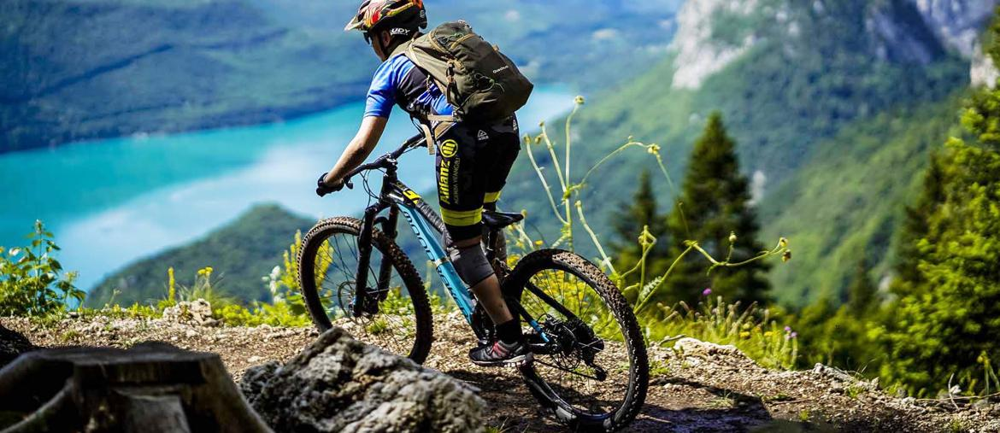

Attività presenti nei dintorni
- Mountain bike
-

La casa, essendo situata a Teolo, dista circa 15 minuti di macchina dai famosi Colli Euganei, meta molto ambita dagli appassionati di mountain bike . Nei colli padovani, infatti, vi sono numerosi sentieri e percorsi destinati ai ciclisti. Quest'ultimi variano di difficoltà, garantendo divertimento sia ai principianti che ai maggiori esperti di questo sport. In seguito presentiamo un linkad un sito che riporta tutti i percorsi più conosciuti e frequentati.
www.ombremtb.it